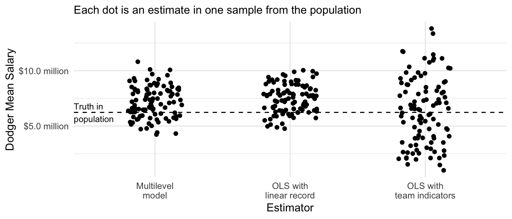

library(tidyverse)Algorithms for prediction
For two sessions, we will cover a few algorithms for prediction. We aim to
- draw connections between algorithms often viewed as classical statistics (e.g., multilevel models) and those often viewed as machine learning (e.g., penalized regression)
- by learning a few new methods, become comfortable with the skills to read about additional new methods on your own in the future
Data: Baseball salaries
We will explore algorithms for prediction through a simple example dataset. The data contain the salaries of all 944 Major League Baseball Players who were on active rosters, injured lists, and restricted lists on Opening Day 2023. These data were compiled by USA Today. After scraping the data and selecting a few variables, I appended each team’s win-loss record from 2022. The data are available in baseball_population.csv.
baseball_population <- read_csv("https://ilundberg.github.io/soc212b/data/baseball_population.csv")The first rows of the data are depicted below. Each row is a player. The player Madison Bumgarner had a salary of $21,882,892. His position was LHP for left-handed pitcher. His team was Arizona, and this team’s record in the previous season was 0.457, meaning that they won 45.7% of their games.
We will summarize mean salaries. Some useful facts about mean salaries are that they vary substantially across positions and also across teams.

Each team has about 30 players. As a task, we will often focus on estimating the mean salary of the L.A. Dodgers. Because we have the full population of data, we can calculate the answer directly:
true_dodger_mean <- baseball_population |>
# Restrict to the Dodgers
filter(team == "L.A. Dodgers") |>
# Record the mean salary
summarize(mean_salary = mean(salary)) |>
# Pull that estimate out of the data frame to just be a number
pull(mean_salary)The true Dodger mean salary on Opening Day 2023 was $6,232,196. We will imagine that we don’t know this number. Instead of having the full population, we will imagine we have a sample of only 5 players per team. The function draw_sample will draw one such sample.
baseball_sample <- baseball_population |>
group_by(team) |>
slice_sample(n = 5) |>
ungroup()We will imagine we know the identities of the Dodger players and the team’s past win-loss record, but we need to predict their salaries in 2023.
dodgers_to_predict <- baseball_population |>
filter(team == "L.A. Dodgers") |>
select(-salary)Ordinary Least Squares
To walk through the steps of our prediction task, we first consider Ordinary Least Squares. After walking through these steps, we will consider a series of more advanced algorithms for prediction that involve similar steps.
For OLS, we might model salary as a function of team_past_record. The code below learns this model in our sample.
ols <- lm(
salary ~ team_past_record,
data = baseball_sample
)We can then make a prediction for every player on the Dodgers. Because our only predictor is a team-level predictor (team_past_record), the prediction will be the same for every player. But this may not always be the case, as further down the page when we consider position as an additional predictor.
ols_predicted <- dodgers_to_predict |>
mutate(predicted_salary = predict(ols, newdata = dodgers_to_predict)) |>
print(n = 3)# A tibble: 35 × 5
player position team team_past_record predicted_salary
<chr> <chr> <chr> <dbl> <dbl>
1 Freeman, Freddie 1B L.A. Dodgers 0.685 5552999.
2 Heyward, Jason OF L.A. Dodgers 0.685 5552999.
3 Betts, Mookie OF L.A. Dodgers 0.685 5552999.
# ℹ 32 more rowsFinally, we can average over these predictions to estimate the mean salary on the Dodgers.
ols_estimate <- ols_predicted |>
summarize(ols_estimate = mean(predicted_salary))By OLS prediction, we estimate that the mean Dodger salary was $5.6 million. Because we estimated in a sample and under some modeling assumptions, this is a bit lower than the true population mean of $6.2 million.
Performance over repeated samples
Because this is a hypothetical setting, we can consider the performance of our estimator across repeated samples. The chunk below pulls our code into a single function that we call estimator(). The estimator takes a sample and returns an estimate.
ols_estimator <- function(
sample = baseball_sample,
to_predict = dodgers_to_predict
) {
# Learn a model in the sample
ols <- lm(
salary ~ team_past_record,
data = sample
)
# Predict for our target population
ols_predicted <- to_predict |>
mutate(predicted_salary = predict(ols, newdata = to_predict))
# Average over the target population
ols_estimate <- ols_predicted |>
summarize(ols_estimate = mean(predicted_salary)) |>
pull(ols_estimate)
# Return the estimate
return(ols_estimate)
}We can run the estimator repeatedly, getting one estimate for each repeated sample from the population. This exercise is possible because in this simplified setting we have data on the full population.
library(foreach)many_sample_estimates <- foreach(
repetition = 1:100, .combine = "c"
) %do% {
# Draw a sample from the population
baseball_sample <- baseball_population |>
group_by(team) |>
slice_sample(n = 5) |>
ungroup()
# Apply the estimator to the sample
estimate <- ols_estimator(baseball_sample)
return(estimate)
}Then we can visualize the performance across repeated samples.

Across repeated samples, the estimates have a standard deviation of $1.3 million and are on average $1.2 million too high.
Models with more parameters
An OLS model for salary that is linear in the team past record clearly suffers from model approximation error. If you fit a regression line to the entire population of baseball players you would see that th Dodger’s mean salary is below this line.
How can we solve model approximation error? One might replace the linear term team_past_record with a series of categories for team in the OLS model.
ols_team_categories <- lm(
salary ~ team,
data = baseball_sample
)But because the sample contains only 5 players per team, these estimates are quite noisy.

In broad strokes, this is the problem that algorithms for prediction seek to solve:
- avoid bias from model approximation error
- avoid a high-variance estimator
We need a model that strikes a balance between bias and variance.
Multilevel models
Multilevel models1 are an algorithm for prediction that is fully grounded in classical statistics. They are especially powerful for the problem depicted above: making predictions when there are many groups (teams) with a small sample size in each group.
We will first illustrate a multilevel model’s performance and then consider the statistics behind this model. We will estimate using the lme4 package. If you don’t have this package, install it with install.packages("lme4").
library(lme4)In the syntax, the code (1 | team) says that our model should have a unique intercept for every team, and that these intercepts should be regularized (more on this soon).
multilevel <- lmer(salary ~ team_past_record + (1 | team), data = baseball_sample)We can make predictions from a multilevel model just like we can from OLS. For example, the code below makes predictions for the Dodgers.
multilevel_predicted <- dodgers_to_predict |>
mutate(
fitted = predict(multilevel, newdata = dodgers_to_predict)
)Intuition
The multilevel model is a partial-pooling estimator. The figure below displays this visually. For each team, the solid dot is the mean salary among the 5 sampled players. The ends of the arrows are the multilevel model estimates. The multilevel model pools the team-specific estimates toward the model-based prediction.
The multilevel model only regularizes the team-specific estimates to the degree that they are imprecise. If we repeat the entire process on a sample of 20 players per team, each team-specific estimate becomes more precise and the overall amount of shrinkage is less.
Performance over repeated samples
We previously discussed how an OLS prediction that was linear in the past team record was a biased estimator with low variance. The sample mean within each team was an unbiased estimator with high variance. The multilevel model falls in between these two extremes.

In math
Mathematically, a multilevel model is a maximum likelihood estimator. For our case, the model assumes that the salary of player \(j\) on team \(i\) is assumed to be normally distributed around the team mean salary \(\mu_i\), with standard deviation \(\sigma\) which in our case is assumed to be the same across teams.
\[Y_{ij} \sim \text{Normal}(\mu_i, \sigma)\] The team-specific mean \(\mu_i\) involves two components. First, this mean is assumed to be centered at a linear prediction \(\alpha + X_i\beta\) where \(X_i\) is the win-loss record of team \(i\) in the previous year. This is the value toward which team-specific estimates are regularized. Second, the mean for the particular team \(i\) is drawn from a normal distribution with standard deviation \(\sigma_\mu\), which is the standard deviation of the team-specific mean salary residuals across teams.
\[\mu_i \sim \text{Normal}(\alpha + X_i\beta, \sigma_\mu)\] By maximizing the log likelihood of the observed data under this model, one comes to maximum likelihood estimates of all of the unknown parameters.
Ridge regression
While multilevel models are often approached from the standpoint of classical statistics, they are very similar to another approach commonly approached from the standpoint of data science: ridge regression.
Intuition
Consider our sample of 30 baseball teams with 5 players per team. We might want to fit a linear regression model as follows,
\[ Y_{ij} = \alpha + \beta X_i + \gamma_{i} + \epsilon_{ij} \] where \(Y_{ij}\) is the salary of player \(i\) on team \(j\) and \(X_i\) is the past win-loss record of that team. In this model, \(\gamma_i\) is a team-specific deviation from the linear fit, which corrects for model approximation error that will arise if particular teams have average salaries not well-captured by the linear fit. The error term \(\epsilon_ij\) is the deviation for player \(j\) from their own team’s average salary.
The problem with this model is its high variance: with 30 teams, there are 30 different values of \(\gamma_i\) to be estimated. And there are only 5 players per team! We might believe that \(\gamma_i\) values will generally be small, so we might want to estimate by penalizing large values of \(\gamma_i\).
We can penalize large values of \(\gamma_i\) by an estimator written as it might be written in a data science course:
\[ \{\hat\alpha, \hat\beta, \hat{\vec\gamma}\} = \underset{\alpha,\beta,\vec\gamma}{\text{arg min}} \left[\sum_i\sum_j\left(Y_{ij} - \left(\alpha + \beta X_i + \gamma_{i}\right)\right)^2 + \lambda\sum_i\gamma_i^2\right] \]
where the estimated values \(\{\hat\alpha, \hat\beta, \hat{\vec\gamma}\}\) are chosen to minimize a loss function which is the sum over the data of the squared prediction error plus a penalty on large values of \(\gamma_i\).
In code
library(glmnet)ridge <- glmnet(
x = model.matrix(~ -1 + team_past_record + team, data = baseball_sample),
y = baseball_sample$salary,
penalty.factor = c(0,rep(1,30)),
# Choose the ridge penalty (alpha = 0).
# Later, we will learn about the LASSO penalty (alpha = 1)
alpha = 0
)We can visualize the ridge regression estimates just like the multilevel model estimates. Because the penalty applies to squared values of team deviations from the line, the points furthest from the line are most strongly regularized toward the line.

The amount of regularization will depend on the chosen value of the penalty parameter \(\lambda\). To the degree that \(\lambda\) is large, estimates will be more strongly pulled toward the regression line. Below is a visualization at three values of \(\lambda\).

Focusing on the prediction for the Dodgers, we can see how the estimate changes as a function of the penalty parameter \(\lambda\).
Warning: Removed 23 rows containing missing values or values outside the scale range
(`geom_line()`).
We will discuss how to choose the value of lambda more in two weeks when we discuss data-driven selection of an estimator.
Performance over repeated samples
The ridge regression estimator has intuitive performance across repeated samples: the variance of the estimates decreases as the value of the penalty parameter \(\lambda\) rises. The biase of the estimates also increases as the value of \(\lambda\) increases. The optimal value of \(\lambda\) is a problem-specific question that requires one to balance the tradeoff between bias and variance.

LASSO regression
LASSO regression is just like ridge regression except for one key difference: instead of penalizing the sum of squared coefficients, LASSO penalizes the sum of the absolute value of coefficients. As we will see, this change means that some parameters become regularized all the way to zero so that some terms drop out of the model completely.
As with ridge regressiom, our outcome model is
\[ Y_{ij} = \alpha + \beta X_i + \gamma_{i} + \epsilon_{ij} \] where \(Y_{ij}\) is the salary of player \(i\) on team \(j\) and \(X_i\) is the past win-loss record of that team. In this model, \(\gamma_i\) is a team-specific deviation from the linear fit, which corrects for model approximation error that will arise if particular teams have average salaries not well-captured by the linear fit. The error term \(\epsilon_ij\) is the deviation for player \(j\) from their own team’s average salary.
To solve the high-variance estimates of \(\gamma_i\), LASSO regression uses a different penalty term in its loss function:
\[ \{\hat\alpha, \hat\beta, \hat{\vec\gamma}\} = \underset{\alpha,\beta,\vec\gamma}{\text{arg min}} \left[\sum_i\sum_j\left(Y_{ij} - \left(\alpha + \beta X_i + \gamma_{i}\right)\right)^2 + \lambda\sum_i\lvert\gamma_i\rvert\right] \]
where \(\gamma_i^2\) from the ridge regression penalty has been replaced by the absolute value \(\lvert\gamma_i\rvert\). We will first apply this in code and then see how it changes the performance of the estimator.
In code
library(glmnet)lasso <- glmnet(
x = model.matrix(~ -1 + team_past_record + team, data = baseball_sample),
y = baseball_sample$salary,
penalty.factor = c(0,rep(1,30)),
# Choose LASSO (alpha = 1) instead of ridge (alpha = 0)
alpha = 1
)Visualizing the estimates, we see behavior similar to what we have previously seen from multilevel models and ridge regression. All estimates are pulled toward a linear regression fit. There are two key differences, however.
First, the previous estimators most strongly pulled the large deviations toward the linear fit. The LASSO estimates pull all parameter estimates toward the linear fit to a similar degree, regardless of their size. This is because the LASSO estimates penalize the absolute value of \(\gamma_i\) instead of the squared value of \(\gamma_i\).
Second, the multilevel and ridge estimates never pulled any of the estimates all the way to the line; instead, the estimates asymptoted toward the line as the penalty parameter grew. In LASSO, some estimates are pulled all the way to the line.

Focusing on the prediction for the Dodgers, we can see how the estimate changes as a function of the penalty parameter \(\lambda\). At a very small penalty, the estimate is approximately the same as the mean among the 5 sampled Dodger players. As the penalty parameter \(\lambda\) gets larger, the estimates move around. They generally move toward zero, but not always: as some other team-specific deviations are pulled to zero, the unregularized intercept and slope on team past record move around in response. Ultimately, the penalty becomes so large that the Dodger estimate is regularized all the way to the estimate we would get in a model with no team-specific deviations.

As with ridge regression, we will discuss how to choose the value of lambda more in two weeks when we discuss data-driven selection of an estimator.
Performance over repeated samples
Similar to the ridge regression estimator, we can visualize the performance of the LASSO regression estimator across repeated samples from the population.
Trees
Forests
Gradient boosting
Footnotes
Raudenbush, S. W., and A.S. Bryk. (2002). Hierarchical linear models: Applications and data analysis methods. Advanced Quantitative Techniques in the Social Sciences Series/SAGE.↩︎